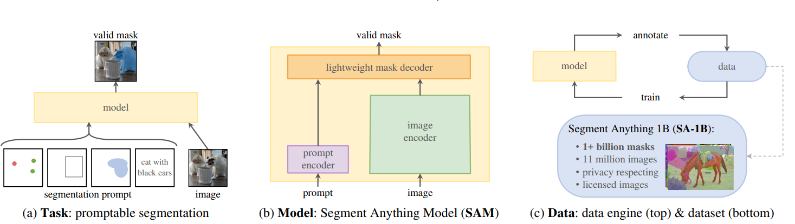
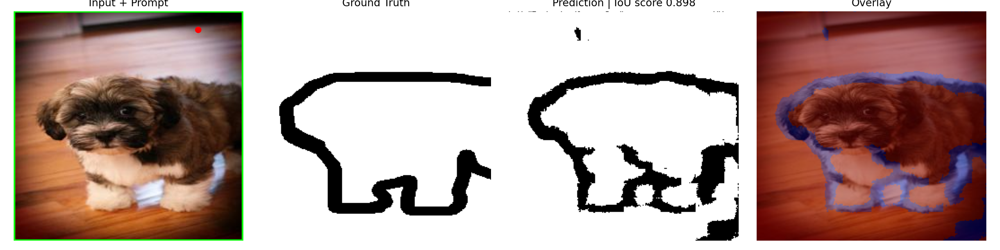
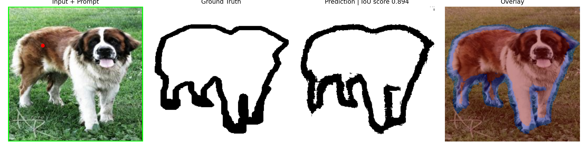

MiniSAM from scratch
Learn how a small SAM-style model segments objects from clicks and boxes.
MiniSAM is a simple educational version of the Segment Anything idea. Give it an image and a prompt, such as one click or one box, and it predicts the object mask.
This blog is for complete beginners
You do not need to know transformers, attention, embeddings, or the original SAM paper before reading this. We will first understand the problem in plain language, then slowly connect it to the MiniSAM architecture.
What problem does MiniSAM solve?
Imagine you have a pet photo and you want only the cat, dog, or object in the image. Drawing the boundary manually is slow. MiniSAM learns to do this automatically.
The important idea is this: MiniSAM is not only looking at the image. It also listens to the prompt. That makes it interactive. The same image can produce different masks depending on where you click or which box you draw.
The four pieces of MiniSAM
MiniSAM can be understood as four simple modules. Each module has one clear job.
Image Encoder
Reads the image and converts it into feature maps. A feature map is a compact description of edges, colors, textures, and shapes.
Prompt Encoder
Reads the user's prompt, such as a point or a box, and converts it into prompt features.
Mask Decoder
Combines image features and prompt features, then predicts possible object masks.
IoU Predictor
Gives a quality score to each predicted mask so the best mask can be selected.
Architecture Diagram: Task, Model, and Data
This diagram explains the main idea behind SAM in three parts: what task SAM solves, how the model is built, and what data was used to train it.

SAM has three important ideas: a user gives a prompt, the model predicts a valid mask, and large-scale data is used to train the model.
(a) Task: Promptable Segmentation
SAM is designed to segment an object using different types of prompts. A prompt is a simple instruction given by the user.
- Point prompt: Click on the object you want.
- Box prompt: Draw a rectangle around the object.
- Mask prompt: Give a rough mask as guidance.
- Text prompt: Describe the object using words.
The image and the prompt are given to the model, and the model returns a valid mask, which means a clean object region.
(b) Model: Segment Anything Model
SAM uses three main components to convert an image and a prompt into a mask.
- Image encoder: Reads the image and creates useful image features.
- Prompt encoder: Converts the user prompt, such as a point or box, into prompt features.
- Lightweight mask decoder: Combines image features and prompt features to predict the final segmentation mask.
In simple words, the image encoder understands the image, the prompt encoder understands the user's instruction, and the mask decoder produces the object mask.
(c) Data: Data Engine and SA-1B Dataset
SAM was trained using a large data engine. The model helped create masks, humans checked or improved them, and the improved data was used to train the model again.
This repeated cycle created the SA-1B dataset, which contains:
- 1+ billion masks
- 11 million images
- Privacy-respecting and licensed images
This large dataset is one reason SAM can work on many different kinds of images and objects.
What are prompts?
A prompt is the user's instruction. It tells the model what object to segment.
Positive point
A click inside the object. It means: include the object near this point.
Negative point
A click on the background or wrong object. It means: do not include this region.
Box prompt
A rectangle around the object. It tells the model where to search.
Simple example
Suppose the image contains a dog. If you click on the dog, MiniSAM tries to return the dog mask. If you draw a box around the dog's head, it may focus on the head region. The prompt controls the answer.
Real prediction examples
The examples below show MiniSAM predictions from the Oxford-IIIT Pet dataset.


Each example compares the input image, the real mask, the predicted mask, and the overlap.
What you will learn from this project
- How prompt-based segmentation works.
- How a SAM-style model is split into image encoder, prompt encoder, and mask decoder.
- How training data is converted into box and point prompts.
- How to train and evaluate the model on the Oxford-IIIT Pet dataset.
- How to read IoU, Dice, precision, recall, and pixel accuracy.
Start here
The best reading order is:
- How It Works - understand the model.
- Training Guide - run the training commands.
- Results - interpret the final metrics and examples.